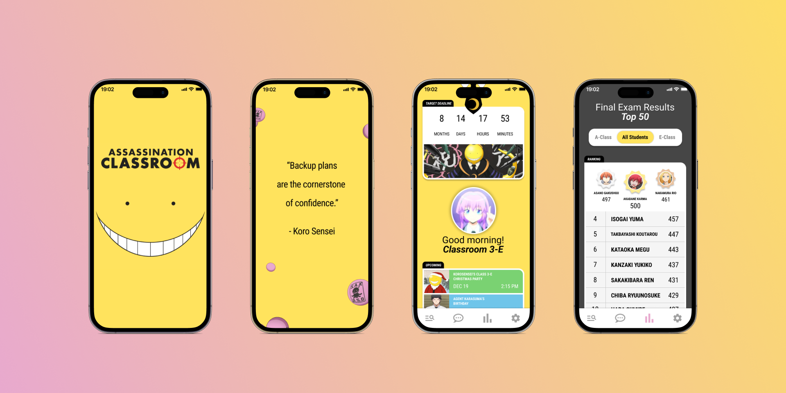

Case Study / Mobile Concept
Assassination Classroom Student Mobile App Mockup
A playful mobile app concept built around classroom identity, student ranking, event reminders, and a visual system inspired by the tone of the series.- Role
- Mobile UI Design
- Focus
- Fan app concept, dashboard, ranking flows
- Timeline
- Placeholder case study

Translated a fictional system
The concept maps recognizable classroom rituals into a mobile dashboard, rankings, events, and student status surfaces.
Kept the tone playful
Bright color, character-forward moments, and simple hierarchy keep the experience energetic without losing usability.
Designed for quick scanning
The screens emphasize fast status checks, lightweight updates, and navigation that feels natural on mobile.